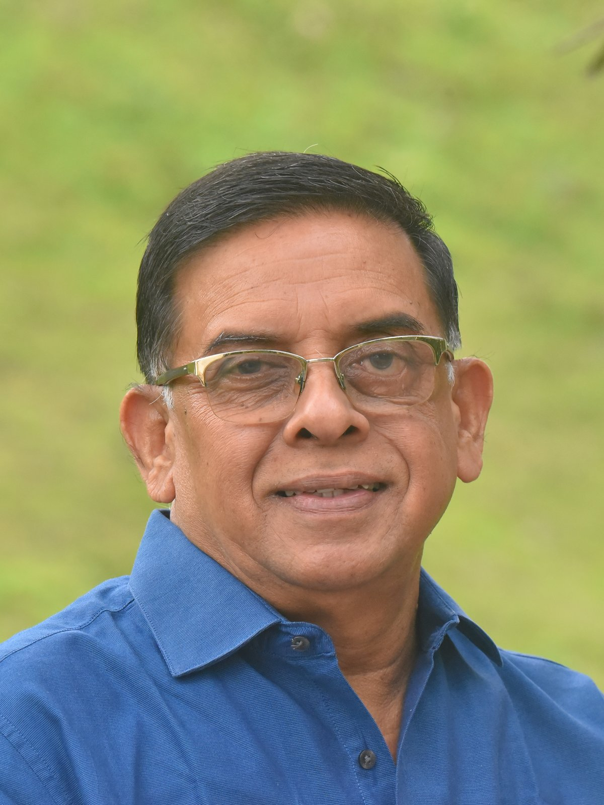
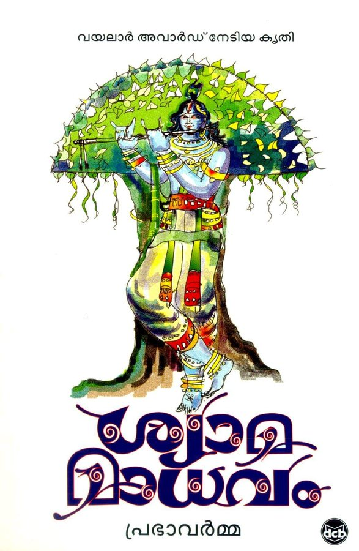
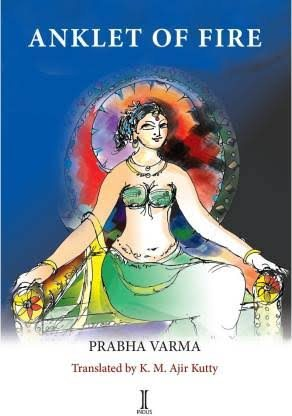
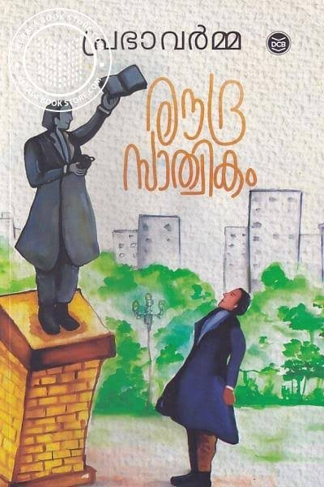
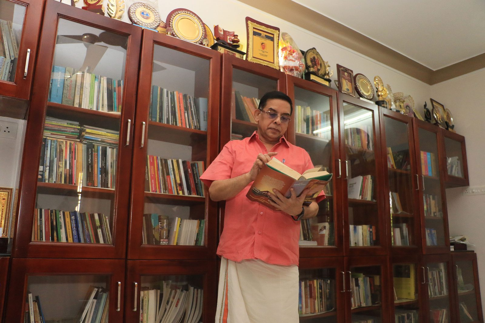
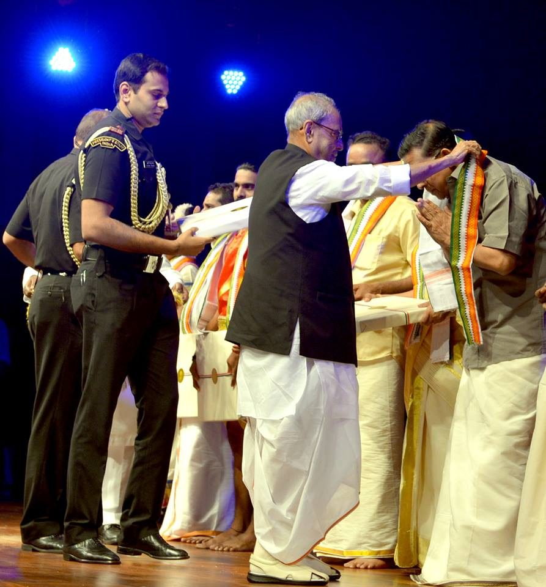
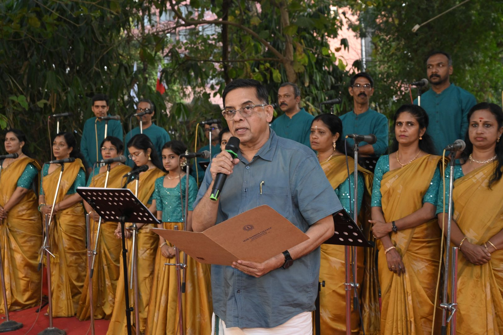

Poet · Lyricist · Journalistകവി · ഗാനരചയിതാവ് · മാധ്യമപ്രവർത്തകൻ
പ്രഭാവർമ്മPrabha Varma
Malayalam poet whose novels in verse — Shyama Madhavam, Kanal Chilambu, Roudra Sathwikam, Adayala Vakyam — brought the long narrative poem back to the centre of Indian literature. Recipient of the Saraswati Samman, the Sahitya Akademi Award and the National Film Award for lyrics.ശ്യാമമാധവം, കനൽച്ചിലമ്പ്, രൗദ്രസാത്വികം, അടയാളവാക്യം എന്നീ കാവ്യാഖ്യായികകളിലൂടെ ദീർഘകാവ്യത്തെ ഭാരതീയ സാഹിത്യത്തിന്റെ കേന്ദ്രത്തിലേക്ക് തിരികെ കൊണ്ടുവന്ന മലയാള കവി. സരസ്വതി സമ്മാൻ, കേന്ദ്ര സാഹിത്യ അക്കാദമി പുരസ്കാരം, ഗാനരചനയ്ക്കുള്ള ദേശീയ ചലച്ചിത്ര പുരസ്കാരം എന്നിവ നേടിയ എഴുത്തുകാരൻ.

Flocks of birds come from afar,
gathering together for a while.
Roost on the branches of a tree,
then fly away without a trace.[ശ്യാമമാധവം — മൂലം മലയാളത്തിൽ ചേർക്കേണ്ട ഭാഗം]
— Lament of the Dusky Lord (Shyama Madhavam), translated from the Malayalam— ശ്യാമമാധവം
Four novels in verseനാല് കാവ്യാഖ്യായികകൾ
The kavyakhyayika — a full-length story told entirely in metre — is the form Prabha Varma made his own.പൂർണ്ണമായും വൃത്തത്തിൽ പറയുന്ന കഥ — കാവ്യാഖ്യായിക — പ്രഭാവർമ്മ സ്വന്തമാക്കിയ രൂപമാണ്.

2010sShyama Madhavamശ്യാമമാധവം
Krishna's last hours, told from inside his own remorse. Fifteen chapters; Sahitya Akademi Award, Vayalar Award, Kerala Sahitya Akademi Award. Chosen by the State Library Council as the book of the decade. Translated into ten languages.കൃഷ്ണന്റെ അവസാന നിമിഷങ്ങൾ, അദ്ദേഹത്തിന്റെ തന്നെ പശ്ചാത്താപത്തിലൂടെ. പതിനഞ്ച് അധ്യായങ്ങൾ; കേന്ദ്ര-കേരള സാഹിത്യ അക്കാദമി പുരസ്കാരങ്ങൾ, വയലാർ അവാർഡ്. ദശകത്തിലെ മികച്ച പുസ്തകം. പത്ത് ഭാഷകളിലേക്ക് പരിഭാഷ.
Lament of the Dusky Lord
NovellaKanal Chilambuകനൽച്ചിലമ്പ്
Seven chapters of love, power, revenge and a riddle older than Kalidasa: why did the milkmaid laugh when her pot of milk broke? Staged professionally on more than 500 stages across Kerala.പ്രണയം, അധികാരം, പ്രതികാരം — കാളിദാസനേക്കാൾ പഴക്കമുള്ള ഒരു കടങ്കഥയും: പാൽക്കുടം പൊട്ടിയപ്പോൾ ഗോപിക എന്തിനു ചിരിച്ചു? കേരളത്തിലുടനീളം 500-ലധികം വേദികളിൽ നാടകമായി.
Anklet of Fire
2022Roudra Sathwikamരൗദ്രസാത്വികം
Art against power, the individual against the state. Kalidasa reimagined outside history. Saraswati Samman, 2023 — the first Malayalam work to win it in twelve years.കലയും അധികാരവും, വ്യക്തിയും രാഷ്ട്രവും തമ്മിലുള്ള സംഘർഷം. ചരിത്രത്തിനു പുറത്ത് പുനർഭാവന ചെയ്ത കാളിദാസൻ. 2023-ലെ സരസ്വതി സമ്മാൻ — പന്ത്രണ്ട് വർഷത്തിനു ശേഷം മലയാളത്തിന്.
Ferocious Piety RecentAdayala Vakyamഅടയാളവാക്യം
A murder, a mind, and modern medicine — perhaps India's only detective novel written in verse.ഒരു കൊലപാതകം, ഒരു മനസ്സ്, ആധുനിക വൈദ്യശാസ്ത്രം — ഒരുപക്ഷേ ഇന്ത്യയിലെ ഏക പദ്യ കുറ്റാന്വേഷണ നോവൽ.
Novel in verseThe poet, by his peersസമകാലികരുടെ വാക്കുകളിൽ
“He has inherited the subtle poetic richness of Vyloppilly Sreedhara Menon, who himself picked up the quality from Kumaran Asan.”“വൈലോപ്പിള്ളിയുടെ സൂക്ഷ്മമായ കാവ്യസമൃദ്ധി അദ്ദേഹത്തിനു കൈവന്നിരിക്കുന്നു — കുമാരനാശാനിൽനിന്ന് വൈലോപ്പിള്ളിക്കു ലഭിച്ചതു പോലെ.”
O. N. V. Kurup, Jnanpith laureateജ്ഞാനപീഠ ജേതാവ്
“Prabha Varma is a born poet.”“പ്രഭാവർമ്മ ജന്മനാ കവിയാണ്.”
Prof. M. Krishnan Nair
“He has demonstrated that it is still possible to be modern in sensibility and diction while following the natural metrical formation that is intrinsic to the language.”“ഭാഷയ്ക്കു സഹജമായ വൃത്തഘടന പിന്തുടർന്നുകൊണ്ടുതന്നെ ഭാവുകത്വത്തിലും ഭാഷയിലും ആധുനികനാകാൻ കഴിയുമെന്ന് അദ്ദേഹം തെളിയിച്ചു.”
K. Jayakumar
Beyond the pageകടലാസിനപ്പുറം
- Songsഗാനങ്ങൾNational Film Award (Rajat Kamal) for Kolaambi; Kerala State Award for lyrics in 2006, 2013 and 2017; “Oru Chempaneer Poo…” and “Kanna Nee Ninaippathare…” each crossed twenty million views within a year.കോളാമ്പിക്ക് ദേശീയ പുരസ്കാരം (രജത കമലം); 2006, 2013, 2017 വർഷങ്ങളിൽ സംസ്ഥാന പുരസ്കാരം; “ഒരു ചെമ്പനീർ പൂ…”, “കണ്ണാ നീ നിനൈപ്പതാരേ…” എന്നിവ ഒരു വർഷത്തിനകം രണ്ടു കോടിയിലധികം കാഴ്ചകൾ.
- Carnatic musicകർണാടക സംഗീതംMore than sixty kritis and two dozen Mohiniyattam padams; full-length thematic concerts of Prabha Varma Kritis have been staged across Kerala; honoured at Rashtrapati Bhavan by President Pranab Mukherjee in 2016.അറുപതിലധികം കൃതികൾ, രണ്ടു ഡസനിലധികം മോഹിനിയാട്ട പദങ്ങൾ; പ്രഭാവർമ്മ കൃതികളുടെ പ്രത്യേക കച്ചേരികൾ; 2016-ൽ രാഷ്ട്രപതി പ്രണബ് മുഖർജി രാഷ്ട്രപതി ഭവനിൽ ആദരിച്ചു.
- StageരംഗവേദിShyama Madhavam and Kanal Chilambu as professional plays directed by M. Santhosh — more than 300 and 500 performances respectively; mural exhibitions, classical dance productions and a novel written in response to his work.എം. സന്തോഷ് സംവിധാനം ചെയ്ത ശ്യാമമാധവം, കനൽച്ചിലമ്പ് നാടകങ്ങൾ — യഥാക്രമം 300, 500-ലധികം വേദികളിൽ; ചുവർച്ചിത്ര പ്രദർശനങ്ങൾ, നൃത്താവിഷ്കാരങ്ങൾ.
- Journalismമാധ്യമപ്രവർത്തനംCovered both houses of Parliament for over a decade; Director (News) of Kairali/People TV, 2001–2010; Kerala State Award for best general reporting, 1996. Later Media Secretary to the Chief Minister of Kerala.ഒരു ദശകത്തിലധികം പാർലമെന്റിന്റെ ഇരുസഭകളും റിപ്പോർട്ട് ചെയ്തു; കൈരളി/പീപ്പിൾ ടിവി ന്യൂസ് ഡയറക്ടർ 2001–2010; മികച്ച റിപ്പോർട്ടിങ്ങിനുള്ള സംസ്ഥാന പുരസ്കാരം 1996. പിന്നീട് മുഖ്യമന്ത്രിയുടെ മീഡിയ സെക്രട്ടറി.



For juries, editors and researchersപുരസ്കാര സമിതികൾക്കും ഗവേഷകർക്കും
A verified record of the workകൃതികളുടെ ആധികാരിക രേഖ
Complete bibliography, dated list of honours, translations, adaptations and downloadable biographical notes in English and Malayalam.സമ്പൂർണ്ണ ഗ്രന്ഥസൂചി, തീയതി സഹിതം പുരസ്കാരപ്പട്ടിക, പരിഭാഷകൾ, ആവിഷ്കാരങ്ങൾ, ഇംഗ്ലീഷിലും മലയാളത്തിലും ജീവചരിത്രക്കുറിപ്പുകൾ.